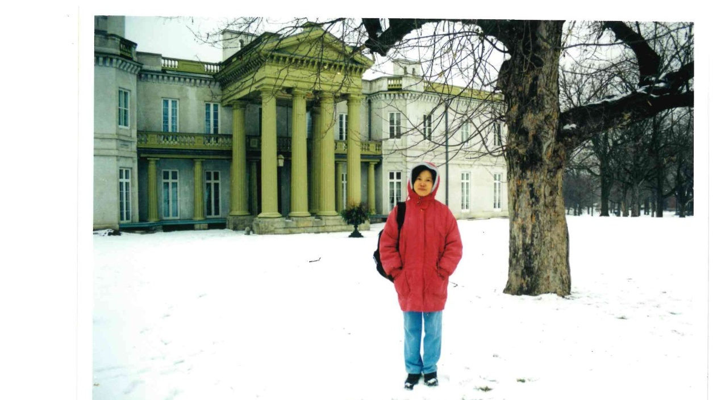

Listening to Hamilton, participating in public life, and building a stronger community together.
I arrived in Hamilton in 2000 as an independent immigrant, ready to begin a new chapter of my life in Canada.
One of my first priorities was learning English and becoming part of my new community. I studied English as an English as a Second Language (ESL) and also volunteered, gaining experience and building connections in Hamilton.
I then worked as a Pharmacy Assistant at four Hamilton drug-store locations. Starting from the ground up gave me a practical understanding of working in the community, serving people and adapting to a new country.
This was the beginning of my life in Hamilton — learning, working, volunteering and becoming part of the community I call home.

For more than twenty years, Nathalie has continued to participate in public life and listen to residents.
The most important part of campaigning has never been the signs or the speeches. It has been the conversations with ordinary people.
Behind every door is a different experience: families managing rising costs, seniors concerned about their future, young people looking for opportunity, business owners trying to grow, and newcomers building a life in Hamilton.
Municipal government affects people's lives every day. Roads, parks, transportation, housing, public spaces, taxes, infrastructure and City services all shape the quality of our communities.
Nathalie believes residents should have a meaningful voice in decisions that affect their neighbourhoods and their city.
Good government begins with listening, followed by responsible decision-making and accountability.
Hamilton is made stronger when every generation and every neighbourhood has an opportunity to participate.
Older adults should be able to live with dignity, security and independence, with access to housing, transportation, healthcare and community connections.
Hamilton should be a city where families can find safe neighbourhoods, appropriate housing, good services and opportunities for their children.
Young people need opportunities to learn, work, participate in their communities and build their futures in Hamilton.
Hamilton has benefited from generations of newcomers. A welcoming city should provide opportunities for people to contribute their skills and build stable lives.
Small businesses and entrepreneurs are important parts of Hamilton's neighbourhoods and economy. City processes should help people get things done rather than create unnecessary barriers.
Hamilton's communities are different and have different needs. Municipal decisions should consider local conditions while keeping the interests of the whole city in view.
Nathalie believes that growing older should never mean becoming invisible.
Older adults bring decades of experience, knowledge and contribution to Hamilton. Municipal policy should help seniors remain connected to their communities and maintain their independence.
Important issues include accessible transportation, affordable and appropriate housing, safe public spaces, access to community services and opportunities to remain socially connected.
Nathalie believes seniors should not simply be recipients of municipal services. They should be part of the conversation about the policies and services that affect their lives.
Arts and culture are an important part of Hamilton's identity, economy and quality of life.
Artists, cultural organizations, festivals, venues, museums, theatres and creative businesses contribute to vibrant neighbourhoods, tourism, employment and community connection.
Nathalie believes Hamilton should support a cultural environment where artists and organizations can contribute to the city's future while residents of all ages have opportunities to participate.
Affordable cultural space, youth participation, accessibility and partnerships between the City, cultural organizations, businesses and community groups should all be part of the conversation.
Nathalie's community involvement has included participation in public affairs, professional regulation and public decision-making.
Participation in and observation of Council meetings, public hearings and decision-making processes over many years.
Served as a Council member and Chair of the Patient Relations Committee of the College of Traditional Chinese Medicine Practitioners and Acupuncturists of Ontario from 2013 to 2015.
Followed and participated in public discussions involving professional regulation, legislation, governance and community issues.
Continued engagement with residents and communities through repeated election campaigns and public participation over more than two decades.
I want Hamilton to be a city where people feel that their government sees them, hears them and respects the contribution they make.
A strong community is built not only through major projects, but through the everyday things that make neighbourhoods work.
Listen. Respect. Work together. Deliver.
Have an idea, concern or community issue you would like to share?
905-527-7255